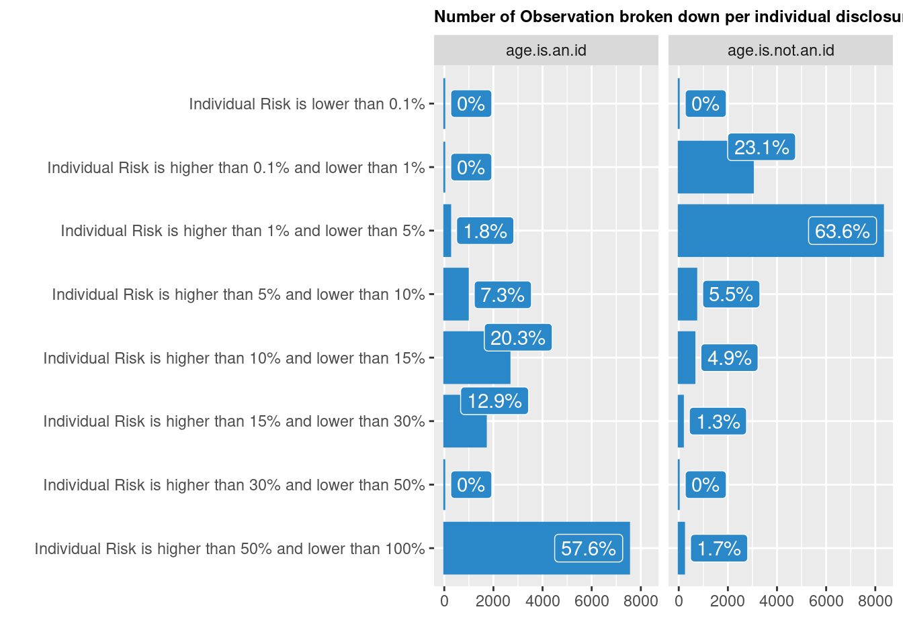

The dissemination of microdata (i.e. survey data) allows to reduce duplication in data collection; to improve the reliability and relevance of data; to support research to promoting development of new tools for using data. Last but not least, it enhance the credibility of the organization that collected the data.
In the context of the grand bargain commitment of joint needs assessment, being able to share such survey data, and therefore to anonymise it beforehand, is a key requirement for collective data interpretation. This post aims at demonstrating that the measurement of statistical disclosure risk is a key analysis and requirement for proper anonymisation.
Anonymisation is often erroneously perceived as the operation of simply removing direct identifiers (such as name, telephone, GPS locations). There are indeed ways to re-identify persons through other means using undirect identifiers. In addition, there’s also a potential perception that anonymisation can be fully automatized through the application of data treatment based on predefined threshold.
The selection of variables to be considered for anonymisation has direct influence on disclosure risk level measurement. Different organizations may have different views and well-intended organizations may disclose elements that are identified as sensitive by another one. Although there are rule of thumbs to define acceptable level of acceptable risk, i.e. the threshold for disclosure risk, this value is not absolute and heavily depends on how risks were initially defined.
One challenge is therefore to avoid having anonymisation being seen as technical topic. This comes with a high risk of eluding the initial need for ethical and coordinated considerations on what can be a realistic intrusion scenario in order to have acceptable re-identification risk endorsement. In reality, it is likely that different organisations may have very different views on what can be such realistic intrusion scenarios.
This analysis demonstrate that the first need is actually frame joint and collective data interpretation through research agreement and protocols rather than to assume that simple data sharing can the way forward.
Suppose a hypothetical intruder has access to some released microdata and attempts to identify or find out more information about a particular respondent. Disclosure, also known as “re-identification,” occurs when the intruder reveals previously unknown information about a respondent by using the released data. Three types of disclosure can be distinguished:
Identity disclosure occurs if the intruder associates a known individual with a released data record. For example, the intruder links a released data record with external information, or identifies a respondent with extreme data values. In this case, an intruder can exploit a small subset of variables to make the linkage, and once the linkage is successful, the intruder has access to all other information in the released data related to the specific respondent.
Attribute disclosure occurs if the intruder is able to determine some new characteristics of an individual based on the information available in the released data. For example, if a hospital publishes data showing that all female patients aged 56 to 60 have cancer, an intruder then knows the medical condition of any female patient aged 56 to 60 without having to identify the specific individual.
Inferential disclosure occurs if the intruder is able to determine the value of some characteristic of an individual more accurately with the released data than otherwise would have been possible. For example, with a highly predictive regression model, an intruder may be able to infer a respondent’s sensitive income information using attributes recorded in the data, leading to inferential disclosure.
To assess disclosure risk, one must make realistic assumptions about the information data users might have at hand to match against the micro dataset; these assumptions are called disclosure risk scenarios. This goes hand in hand with the selection of categorical key variables because the choice these identifying variables defines a specific disclosure risk scenario.
Proper and secure microdata dissemination requires to apply Statistical Disclosure Control (SDC) methods to data before release. Data anonymisation is always a trade-off between disclosure risks and information loss. The objective is to modify data in such a way that both the disclosure risk and the information loss caused are acceptably low.
Specific data analysis is required to allow to quickly identify potential statistical disclosure risks so that the organization can make informed decisions when disclosing data. A series of measurement can be performed to assess those risks:
Risk linked to each records in the dataset: Global disclosure risk & Record-level disclosure risk;
Risk linked to combination of categorical variables in the dataset: k-anonymity & l-diversity: ;
Perturbative and non-pertubative approaches to decrease the risks can be applied. This entails for categoric variable: Recoding, suppressing, post randomization , and for continuous variables: Adding noise, micro-aggregation, swapping… Based on a given threshold for disclosure risk, the “best” method to protect a microdata set is hard to determine in general. For a particular microdata set the “best” SDC method depends on the intended uses of the data by the users, the willingness of the statistical agency to disseminate this data set, the legal aspects of releasing these data, and on the structure of the data.
The simplest option are: * Global recoding, a non-perturbative method, that can be applied to both categorical and continuous key variables. The basic idea of recoding a categorical variable is to combine several categories into a new, less informative category. A frequent use case is the recoding of age given in years into age-groups. If the method is applied to a continuous variable, it means to discretize the variable.
Once those additional treatments are applied, this report can be then regenerated till the ratio “Disclosure Risk” / “Information Loss” is acceptable.
The World Bank has sponsored the development of a disclosure Control Toolbox for the R language and built on the recommendations from the International Household Survey Network.
knitr::opts_chunk$set(
collapse = TRUE,
comment = " ",
message = FALSE,
warning = FALSE
)
## Getting all necessary package
using <- function(...) {
libs <- unlist(list(...))
req <- unlist(lapply(libs,require,character.only = TRUE))
need <- libs[req == FALSE]
if (length(need) > 0) {
install.packages(need, repos = 'https://mirrors.tuna.tsinghua.edu.cn/CRAN/')
lapply(need,require,character.only = TRUE)
}
}
## Getting all necessary package
using("readxl", "httr", "tidyverse", "sdcMicro", "ggthemes", "ggrepel", "GGally", "ggpubr","classInt")## Loading required package: readxl## Loading required package: httr## Loading required package: tidyverse## ── Attaching packages ────────────────────────────────────────────────────── tidyverse 1.3.0 ──## ✓ ggplot2 3.3.2 ✓ purrr 0.3.4
## ✓ tibble 3.0.3 ✓ dplyr 1.0.2
## ✓ tidyr 1.1.2 ✓ stringr 1.4.0
## ✓ readr 1.3.1 ✓ forcats 0.5.0## ── Conflicts ───────────────────────────────────────────────────────── tidyverse_conflicts() ──
## x dplyr::filter() masks stats::filter()
## x dplyr::lag() masks stats::lag()## Loading required package: sdcMicro## --------
## This is sdcMicro v5.5.1.
## For references, please have a look at citation('sdcMicro')
## Note: since version 5.0.0, the graphical user-interface is a shiny-app that can be started with sdcApp().
## Please submit suggestions and bugs at: https://github.com/sdcTools/sdcMicro/issues
## --------## Loading required package: ggthemes## Loading required package: ggrepel## Loading required package: GGally## Registered S3 method overwritten by 'GGally':
## method from
## +.gg ggplot2## Loading required package: ggpubr## Loading required package: classIntrm(using)The dataset used for this tutorial, selected after a search on HDX assuming that dataset shared there had already been assessed, is from the Internal Displacement Profiling in Hargeisa, Somalia that took place in 2015.
#url1 <- "https://s3.eu-central-1.amazonaws.com/hdx-ckan-filestore-prod/resources/c3c43479-3367-479d-acd0-d8952351807a/somalia_hargesa_hdx.xlsx"
#GET(url1, write_disk(tf <- tempfile(fileext = ".xlsx")))
# data <- readxl::read_excel(tf, sheet = "Dataset")
#download.file(url1, destfile = "somalia_hargesa_hdx.xlsx" )
dataanom <- readxl::read_excel("somalia_hargesa_hdx.xlsx", sheet = "Data")
#class(data)
## Force object to be a data frame
dataanom <- as.data.frame(dataanom)
metadata <- readxl::read_excel("somalia_hargesa_hdx.xlsx", sheet = "Metadata")
# "Dataset", "Name" , "Filter", "Label new", "Sub-label", "Topic", "QuestionType", "DataType", "HouseInd"
# Rename the variable label
names(metadata)[4] <- "Label"
numrow <- nrow(dataanom)
numvar <- ncol(dataanom)The dataset includes 13065 records and 180 variables.
Also called “implicit identifiers” or “quasi-identifiers”: Set of variables that, in combination, can be linked to external information to re-identify respondents in the released dataset (gender, age, occupation, specific needs, region..).
The UK Government Statistical Service policy for the release of social survey microdata suggests that:
A small selection of common key variables from a range of datasets is: age (individual or grouped), sex, health indicator (more likely to be a key variable if a specific condition), size or composition of household, income (household or individual), occupation or industry, ethnic group, religion, country of birth, marital status, house type, house age, floor size, college course, course provider, number of dependent children in household….
The tables below present the variables that were considered for two distinct intrusion risk scenario: one considering age as a quasi-identifier and the second one not that does not consider age as a quasi-identifier .
We will see in the rest of the analysis the relation between risk measurement and the selection of intrusion scenario
# Key variables - To be converted to factors
selected.keyVars <- c("hargeisa3",# Sex of household member
"hargeisa7",# District of origin of household
"hargeisa26",# For households living in settlement Settlement name
"hargeisa10" , #Age of all household members (not grouped)
"hargeisa14" #Number of members living in household
)
selected.keyVars2 <- c("hargeisa3",# Sex of household member
"hargeisa7",# District of origin of household
"hargeisa26",# For households living in settlement Settlement name
"hargeisa14" #Number of members living in household
)
metadata[metadata$Name %in% selected.keyVars, c( "Name","Label", "QuestionType" )] %>% rmarkdown::paged_table()
selected.key1 <- metadata[metadata$Name %in% selected.keyVars, c( "Name","Label", "QuestionType" )]Variables whose values must not be discovered for any respondent. Determination is often subject to legal and ethical concerns (Protection risk, Vulnerabilities..)
selected.sensibleVars <- c("hargeisa15",# Household member has a physical disability
"hargeisa16",# Household member has a mental disability
"hargeisa21",# Household member has chronic illness
"hargeisa22"# Household member is a child without parent
)
metadata[metadata$Name %in% selected.sensibleVars, c("Topic", "QuestionType","Label", "Name" )] %>% rmarkdown::paged_table()
selected.sensible1 <- metadata[metadata$Name %in% selected.sensibleVars, c("Topic", "QuestionType","Label", "Name" )]In order to use the sdcMicro function, we use the main function createSdcObj where variables to be considered for disclosure risk assessment are documented. Here we create 2 objects, one for each disclosure risk scenario.
## Sample weight
selected.weightVar = c("hargeisa180")
# All variables (id, key variables, sensible variables, numerical variables, weights)
dataanom$id <- row.names(dataanom)
## Variable indicating a hiearchical data - hargeisa179
# Household ID
selectedHouseholdID = c('hargeisa179')
# Create subset of file
dataanom.anom <- dataanom[ , c('id', selectedHouseholdID,
selected.keyVars,
selected.sensibleVars,
selected.weightVar)]
# Create initial sdc object for selected variables
sdc.dataanom <- createSdcObj(dat = dataanom.anom,
keyVars = selected.keyVars,
numVars = NULL, #selected.numVars,
pramVars = NULL,
hhId = selectedHouseholdID ,
weightVar = selected.weightVar)
sdc.dataanom2 <- createSdcObj(dat = dataanom.anom,
keyVars = selected.keyVars2,
numVars = NULL, #selected.numVars,
pramVars = NULL,
hhId = selectedHouseholdID ,
weightVar = selected.weightVar)
## Basic information on the input obj such as the number of observations and variables.
#print(sdc.dataanom, type = "general")A dataset is said to satisfy k-anonymity for k > 1 if, for each combination of values of quasi-identifiers (e.g. age, gender, occupation, etc.), at least k records exist in the dataset sharing that combination. Often k-anonymity is analysed at level 2, 3 & 5.
## displays information about 2- and 3-anonymity for First scenario: age as an identifier
print(sdc.dataanom, type = "kAnon")
Infos on 2/3-Anonymity:
Number of observations violating
- 2-anonymity: 4901 (37.512%)
- 3-anonymity: 7521 (57.566%)
- 5-anonymity: 10459 (80.054%)
----------------------------------------------------------------------## displays information about 2- and 3-anonymity for second scenario: age NOT as an identifier
print(sdc.dataanom2, type = "kAnon")
Infos on 2/3-Anonymity:
Number of observations violating
- 2-anonymity: 59 (0.452%)
- 3-anonymity: 216 (1.653%)
- 5-anonymity: 623 (4.768%)
----------------------------------------------------------------------#cat("Show lines with variables that violate k-anonymity 3")
#dataanom.anom[sdc.dataanom@risk$individual[,2] < 3,]
#dataanom.anom[sdc.dataanom@risk$individual[,2] < 5,]
risk21 <- nrow(dataanom.anom[sdc.dataanom@risk$individual[,2] < 2,])
risk22 <- nrow(dataanom.anom[sdc.dataanom2@risk$individual[,2] < 2,])
risk31 <- nrow(dataanom.anom[sdc.dataanom@risk$individual[,2] < 3,])
risk32 <- nrow(dataanom.anom[sdc.dataanom2@risk$individual[,2] < 3,])
risk51 <- nrow(dataanom.anom[sdc.dataanom@risk$individual[,2] < 5,])
risk52 <- nrow(dataanom.anom[sdc.dataanom2@risk$individual[,2] < 5,])If we compare:
There are 4901 # of observations (i.e. 0.38%) that violate 2-anonymity based on the first intrusion scenario, and 59 (i.e. 0.38%) when considering the second scenario.
There are 7521 # of observations (i.e. 58%) that violate 3-anonymity based on the first intrusion scenario, and 216 (i.e. 2%) when considering the second scenario.
There are 10459 # of observations (i.e. 80%) that violate 5-anonymity based on the first intrusion scenario, and 623 (i.e. 5%) when considering the second scenario.
Even after recoding, some combinations of key variable values may still violate k-anonymity, or some records may still have relatively high disclosure risks. Further recoding, however, may not be possible because the data utility would be too low. At this stage, local suppression can be applied. Let’s see how many would be needed to achieve.
The belows estimates are computed for both the original and perturbed data and then compared.
Reported is the number, mean size and size of the smallest category >0 for recoded variables. In parenthesis, the same statistics are shown for the unmodified data (NA (missings) are counted as separate categories!).
2-anonymityRequired suppression for scenario where age is considered as an identifier
sdc.dataanomk12 <- localSuppression(sdc.dataanom, k = 2, importance = NULL)
calcRisks(sdc.dataanomk12)
Key Variable Number of categories Mean size
hargeisa3 2 (2) 6532.500 (6532.500)
hargeisa7 29 (29) 394.214 (397.429)
hargeisa26 16 (15) 869.933 (871.000)
hargeisa10 64 (90) 132.159 (145.167)
hargeisa14 16 (15) 867.267 (871.000)
Size of smallest (>0)
6315 (6315)
3 (3)
79 (80)
1 (1)
13 (15)
KeyVar | Suppressions (#) | Suppressions (%)
hargeisa3 | 0 | 0.000
hargeisa7 | 90 | 0.689
hargeisa26 | 16 | 0.122
hargeisa10 | 4739 | 36.272
hargeisa14 | 56 | 0.429Required suppression for scenario where age is NOT considered as an identifier
sdc.dataanomk22 <- localSuppression(sdc.dataanom2, k = 2, importance = NULL)
calcRisks(sdc.dataanomk22)
Key Variable Number of categories Mean size
hargeisa3 2 (2) 6532.500 (6532.500)
hargeisa7 29 (29) 395.750 (397.429)
hargeisa26 15 (15) 871.000 (871.000)
hargeisa14 16 (15) 870.200 (871.000)
Size of smallest (>0)
6315 (6315)
3 (3)
80 (80)
15 (15)
KeyVar | Suppressions (#) | Suppressions (%)
hargeisa3 | 0 | 0.000
hargeisa7 | 47 | 0.360
hargeisa26 | 0 | 0.000
hargeisa14 | 12 | 0.092Below is the number of records value to remove to achieve 2-anonymity depending on the scenario
sdc.dataanom.localsuppressionk12 <- as.data.frame(t(as.data.frame(sdc.dataanomk12@localSuppression$supps)))
sdc.dataanom.localsuppressionk12$Name <- row.names(sdc.dataanom.localsuppressionk12)
names(sdc.dataanom.localsuppressionk12)[1] <- "age.is.an.id"
sdc.dataanom.localsuppressionk22 <- as.data.frame(t(as.data.frame(sdc.dataanomk22@localSuppression$supps)))
sdc.dataanom.localsuppressionk22$Name <- row.names(sdc.dataanom.localsuppressionk22)
names(sdc.dataanom.localsuppressionk22)[1] <- "age.is.not.an.id"
localsuppressionk2 <- merge(x = selected.key1, by = "Name", y = sdc.dataanom.localsuppressionk12)
localsuppressionk2 <- merge(x = localsuppressionk2, by = "Name", y = sdc.dataanom.localsuppressionk22)
localsuppressionk2 %>% rmarkdown::paged_table()3-anonymity
Required suppression for scenario where age is considered as an identifier## displays various information if local suppression has been applied
sdc.dataanomk13 <- localSuppression(sdc.dataanom, k = 3, importance = NULL)
calcRisks(sdc.dataanomk13)
Key Variable Number of categories Mean size
hargeisa3 2 (2) 6532.500 (6532.500)
hargeisa7 29 (29) 392.179 (397.429)
hargeisa26 16 (15) 869.933 (871.000)
hargeisa10 56 (90) 104.109 (145.167)
hargeisa14 16 (15) 867.000 (871.000)
Size of smallest (>0)
6315 (6315)
2 (3)
79 (80)
1 (1)
13 (15)
KeyVar | Suppressions (#) | Suppressions (%)
hargeisa3 | 0 | 0.000
hargeisa7 | 147 | 1.125
hargeisa26 | 16 | 0.122
hargeisa10 | 7339 | 56.173
hargeisa14 | 60 | 0.459Required suppression for scenario where age is NOT considered as an identifier
sdc.dataanomk23 <- localSuppression(sdc.dataanom2, k = 3, importance = NULL)
calcRisks(sdc.dataanomk23)
Key Variable Number of categories Mean size
hargeisa3 2 (2) 6532.500 (6532.500)
hargeisa7 29 (29) 391.286 (397.429)
hargeisa26 15 (15) 871.000 (871.000)
hargeisa14 16 (15) 868.000 (871.000)
Size of smallest (>0)
6315 (6315)
3 (3)
80 (80)
15 (15)
KeyVar | Suppressions (#) | Suppressions (%)
hargeisa3 | 0 | 0.000
hargeisa7 | 172 | 1.316
hargeisa26 | 0 | 0.000
hargeisa14 | 45 | 0.344Below is the number of records value to remove to achieve 3-anonymity depending on the scenario
sdc.dataanom.localsuppressionk13 <- as.data.frame(t(as.data.frame(sdc.dataanomk13@localSuppression$supps)))
sdc.dataanom.localsuppressionk13$Name <- row.names(sdc.dataanom.localsuppressionk13)
names(sdc.dataanom.localsuppressionk13)[1] <- "age.is.an.id"
sdc.dataanom.localsuppressionk23 <- as.data.frame(t(as.data.frame(sdc.dataanomk23@localSuppression$supps)))
sdc.dataanom.localsuppressionk23$Name <- row.names(sdc.dataanom.localsuppressionk23)
names(sdc.dataanom.localsuppressionk23)[1] <- "age.is.not.an.id"
localsuppressionk3 <- merge(x = selected.key1, by = "Name", y = sdc.dataanom.localsuppressionk13)
localsuppressionk3 <- merge(x = localsuppressionk3, by = "Name", y = sdc.dataanom.localsuppressionk23)
localsuppressionk3 %>% rmarkdown::paged_table()When using sample based dataset, k-Anonymity can be difficult to achieve. In this case, using Individual Risk threshold is an option to consider.
Risk evaluation is based on the concept of uniqueness in the sample and/or in the population. The focus is on individual units that possess rare combinations of selected key variables. The assumption is that units having rare combinations of key variables can be more easily identified and thus have a higher risk of re-identification/disclosure. It is possible to cross-tabulate all identifying variables and view their cast. Keys possessed by only very few individuals are considered risky, especially if these observations also have small sampling weights. This means that the expected number of individuals with these patterns is expected to be low in the population as well.
Two approaches can be used to determine the global risk for a dataset using individual risks:
Benchmark: This approach counts the number of observations that can be considered risky and also have higher risk as the main part of the data. For example, we consider units with individual risks being both ≥ 0 : 1 and twice as large as the median of all individual risks + 2 times the median absolute deviation (MAD) of all unit risks.
Global risk: The sum of the individual risks in the dataset gives the expected number of re-identifications.
The expected number of re-identification indicator is estimated by the sum of record-level disclosure risks. The number of records with higher risks than the main part of the dataset are the number of records whose individual risk is greater than 0.1 and greater than 2 X [median(r) + 2 X MAD(r)], where r is a vector of record-level risks, and MAD is the median absolute deviation of all record-level risks.
riskglobal <- sdc.dataanom@risk$global
riskglobalh <- sdc.dataanom2@risk$globalHere the global risk is 0.5734761, 7492.4656107, 57.3476128, 0, 0.01, 1.228553810^{4}, 0.9403397, 94.033971% based on the first intrusion scenario, and 0.0520213, 679.6586115, 5.2021325, 0.010989, 0.01, 2784.0174406, 0.2130897, 21.3089739% when considering the second scenario.
We can also visualise Individual risk:
risksum <- as.data.frame(sdc.dataanom@risk$individual[, "risk"])
names(risksum)[1] <- "indrisk"
risksum$class.fixed <- as.factor(classInt::findCols(classIntervals(risksum$indrisk, n = 8, style = "fixed", fixedBreaks = c(0, 0.001, 0.01, 0.5, 0.1, 0.15, 0.30, 0.5, 1))))
risksum$class.fixed.name <- recode_factor(risksum$class.fixed, `1` = "Individual Risk is lower than 0.1%",
`2` = "Individual Risk is higher than 0.1% and lower than 1%",
`3` = "Individual Risk is higher than 1% and lower than 5%",
`4` = "Individual Risk is higher than 5% and lower than 10%",
`5` = "Individual Risk is higher than 10% and lower than 15%",
`6` = "Individual Risk is higher than 15% and lower than 30%",
`7` = "Individual Risk is higher than 30% and lower than 50%",
`8` = "Individual Risk is higher than 50% and lower than 100%")
risksum$class.fixed.name <- factor(risksum$class.fixed.name,
levels = c("Individual Risk is lower than 0.1%",
"Individual Risk is higher than 0.1% and lower than 1%",
"Individual Risk is higher than 1% and lower than 5%",
"Individual Risk is higher than 5% and lower than 10%",
"Individual Risk is higher than 10% and lower than 15%",
"Individual Risk is higher than 15% and lower than 30%",
"Individual Risk is higher than 30% and lower than 50%",
"Individual Risk is higher than 50% and lower than 100%"))
risksum2 <- as.data.frame(cbind(table(risksum$class.fixed.name ), prop.table(table(risksum$class.fixed.name ))))
risksum2$class.fixed.name <- row.names(risksum2)
risksum2$class.fixed.name <- factor(risksum2$class.fixed.name,
levels = c( "Individual Risk is higher than 50% and lower than 100%",
"Individual Risk is higher than 30% and lower than 50%",
"Individual Risk is higher than 15% and lower than 30%",
"Individual Risk is higher than 10% and lower than 15%",
"Individual Risk is higher than 5% and lower than 10%",
"Individual Risk is higher than 1% and lower than 5%",
"Individual Risk is higher than 0.1% and lower than 1%",
"Individual Risk is lower than 0.1%"))
risksum2$percentreponse <- paste0(round(risksum2$V2*100,digits = 1),"%")
risksum2$scenario <- "age.is.an.id"
risksumall <- risksum2
risksum <- as.data.frame(sdc.dataanom2@risk$individual[, "risk"])
names(risksum)[1] <- "indrisk"
risksum$class.fixed <- as.factor(classInt::findCols(classIntervals(risksum$indrisk, n = 8, style = "fixed", fixedBreaks = c(0, 0.001, 0.01, 0.5, 0.1, 0.15, 0.30, 0.5, 1))))
risksum$class.fixed.name <- recode_factor(risksum$class.fixed, `1` = "Individual Risk is lower than 0.1%",
`2` = "Individual Risk is higher than 0.1% and lower than 1%",
`3` = "Individual Risk is higher than 1% and lower than 5%",
`4` = "Individual Risk is higher than 5% and lower than 10%",
`5` = "Individual Risk is higher than 10% and lower than 15%",
`6` = "Individual Risk is higher than 15% and lower than 30%",
`7` = "Individual Risk is higher than 30% and lower than 50%",
`8` = "Individual Risk is higher than 50% and lower than 100%")
risksum$class.fixed.name <- factor(risksum$class.fixed.name, levels = c("Individual Risk is lower than 0.1%",
"Individual Risk is higher than 0.1% and lower than 1%",
"Individual Risk is higher than 1% and lower than 5%",
"Individual Risk is higher than 5% and lower than 10%",
"Individual Risk is higher than 10% and lower than 15%",
"Individual Risk is higher than 15% and lower than 30%",
"Individual Risk is higher than 30% and lower than 50%",
"Individual Risk is higher than 50% and lower than 100%"))
risksum2 <- as.data.frame(cbind(table(risksum$class.fixed.name ), prop.table(table(risksum$class.fixed.name ))))
risksum2$class.fixed.name <- row.names(risksum2)
risksum2$class.fixed.name <- factor(risksum2$class.fixed.name, levels = c(
"Individual Risk is higher than 50% and lower than 100%",
"Individual Risk is higher than 30% and lower than 50%",
"Individual Risk is higher than 15% and lower than 30%",
"Individual Risk is higher than 10% and lower than 15%",
"Individual Risk is higher than 5% and lower than 10%",
"Individual Risk is higher than 1% and lower than 5%",
"Individual Risk is higher than 0.1% and lower than 1%",
"Individual Risk is lower than 0.1%"))
risksum2$percentreponse <- paste0(round(risksum2$V2*100,digits = 1),"%")
risksum2$scenario <- "age.is.not.an.id"
risksumall <- rbind(risksumall, risksum2)
## and now the graph
ggplot(risksumall, aes(x = class.fixed.name, y = V1)) +
geom_bar(fill = "#2a87c8",colour = "#2a87c8", stat = "identity", width = .8) +
guides(fill = FALSE) +
facet_wrap(vars(scenario), nrow = 1) +
geom_label_repel(aes(y = V1, label = percentreponse), fill = "#2a87c8", color = 'white') +
ylab("") +
xlab("") +
coord_flip() +
ggtitle("Number of Observation broken down per individual disclosure risk level") +
theme(plot.title = element_text(face = "bold", size = 9 ),
plot.background = element_rect(fill = "transparent",colour = NA))
#cat("Displaying records with potential high risk (> 0.2)")
#high.risk.dataanoms <- dataanom.anom[sdc.dataanom@risk$individual[, "risk"] > 0.2, selected.keyVars ]
#high.risk.dataanomsA 5% threshold may be used as a reference (although again it depends initially on the intrusion scenario..) to apply the anonymisation treatment.
Below is the number of records value to remove to achieve minimise the depending on the scenario
for (h in 1:length(selected.keyVars))
{
# h <-1
sdc.dataanom15 <- localSupp(sdc.dataanom, keyVar = selected.keyVars[h], threshold = 0.05)
sdc.dataanom.localsuppressiont15 <- t(as.data.frame(sdc.dataanom15@localSuppression$supps))
sdc.dataanom.localsuppressiont15 <- as.data.frame(sdc.dataanom15@localSuppression$supps)
sdc.dataanom.localsuppressiont <- as.data.frame(t(sdc.dataanom.localsuppressiont15))
names(sdc.dataanom.localsuppressiont)[1] <- "Suppression"
cat("
")
cat(paste0("Needed suppressions to achieve a 5% individual risk threshold for variable: ", selected.key1[h, c("Label")]))
cat("
")
print(sdc.dataanom.localsuppressiont)
}
Needed suppressions to achieve a 5% individual risk threshold for variable: Sex of household member
Suppression
hargeisa3 13065
hargeisa7 0
hargeisa26 0
hargeisa10 0
hargeisa14 0
Needed suppressions to achieve a 5% individual risk threshold for variable: District of origin of household
Suppression
hargeisa3 0
hargeisa7 11128
hargeisa26 0
hargeisa10 0
hargeisa14 0
Needed suppressions to achieve a 5% individual risk threshold for variable: Age of all household members (not grouped)
Suppression
hargeisa3 0
hargeisa7 0
hargeisa26 13065
hargeisa10 0
hargeisa14 0
Needed suppressions to achieve a 5% individual risk threshold for variable: Number of members living in household
Suppression
hargeisa3 0
hargeisa7 0
hargeisa26 0
hargeisa10 13065
hargeisa14 0
Needed suppressions to achieve a 5% individual risk threshold for variable: Settlement name
Suppression
hargeisa3 0
hargeisa7 0
hargeisa26 0
hargeisa10 0
hargeisa14 13065
#print(sdc.dataanom, type = "ls")The objective is to avoid that records sharing a combination of key attributes in a k-anonymous data set also share the values for one or more confidential attributes. There’s a need to ensure that the sensitive variable has at least l-distinct values for each group of observations with the same pattern of key variables.
l-diverstiy is an extension of the k-anonymity approach where also the uniqueness in sensible variables for each pattern spanned by the key variables are evaluated.
for (h in 1:length(selected.sensibleVars))
{
# h <-1
res1 <- ldiversity(dataanom.anom, keyVars = selected.keyVars, ldiv_index = selected.sensibleVars[h])
cat(paste0("Displaying l-didersity risk for: ", selected.sensible1[ h, c("Label")], "\n") )
# res1
print(res1)
}
Displaying l-didersity risk for: Household member has a physical disability
Min. 1st Qu. Median Mean 3rd Qu. Max.
1 1 1 1 1 1
Displaying l-didersity risk for: Household member has a mental disability
Min. 1st Qu. Median Mean 3rd Qu. Max.
1 1 1 1 1 1
Displaying l-didersity risk for: Household member has chronic illness
Min. 1st Qu. Median Mean 3rd Qu. Max.
1 1 1 1 1 1
Displaying l-didersity risk for: Household member is a child without parent
Min. 1st Qu. Median Mean 3rd Qu. Max.
1 1 1 1 1 1Preparing raw microdata files for dissemination involves processes that may adjust the content and/or number of records. Microdata, when they reach a sufficient level of anonymisation to be released publicly (Public Use File) with data licensing terms equivalent to open data, comes with important information loss that does not make them good enough for instance for vulnerability analysis and scorecard calibration.
Microdata files for open dissemination almost always differ from those strictly for use by staff involved in the responding agencies (application of the need to know data protection principle). Licensed Files—also called Research Files—are distinct from PUFs: their dissemination is restricted to users who have received access authorization after submitting a documented application and signing an agreement governing the data’s use. While licensed files are usually anonymized to minimize the risk of identifying individuals when used in isolation, they may contain potentially identifiable data if linked with other data files.
One important take-away form this exploration is to understand that anonymisation remains relative and that more than data sharing, the key challenge is to establish research agreement in order to support collective and joint data interpretation. Within such research agreement, the confidentiality issue can be addressed in the joint data interpretation is performed directly on “crunched data”, i.e. processed and visualized tabulation. Within such scenario, data sharing is more about